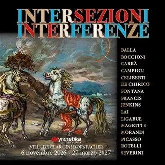

da ven 6 nov a sab 27 mar
Intersezioni e interferenze. Linguaggi artistici tra Novecento e anni Duemila
La mostra propone un viaggio attraverso l’arte moderna e contemporanea, mettendo in dialogo i grandi maestri del Novecento internazionale e le eccellenze artistiche del Friuli Venezia Giulia. Il percorso espositivo si sviluppa in quattro sezioni tematiche dedicate al colore…
 Indicazioni
Indicazioni
- Costi e prenotazioni
- Costo non indicato · Prenotazione non indicata
- Programma
- Programma da verificare. Apri la fonte ufficiale per orari e possibili aggiornamenti.
- In caso di maltempo
- Nessuna indicazione specifica pubblicata.
- Note
- Acquisito automaticamente dalla fonte.
L’EVENTO
Descrizione completa
La mostra propone un viaggio attraverso l’arte moderna e contemporanea, mettendo in dialogo i grandi maestri del Novecento internazionale e le eccellenze artistiche del Friuli Venezia Giulia.
Il percorso espositivo si sviluppa in quattro sezioni tematiche dedicate al colore, all’immaginazione, al segno e alle nuove forme della creatività, con opere e riferimenti ad artisti come Picasso, Warhol , De Chirico, Fontana , Boetti e Maria Lai . La mostra offre un’esperienza coinvolgente e accessibile, arricchita da contenuti digitali consultabili tramite QR Code e da strumenti che favoriscono una fruizione inclusiva e partecipata.
Più che una semplice esposizione , Intersezioni e Interferenze si propone come un’occasione di scoperta e confronto, capace di valorizzare il ruolo dell’arte come linguaggio universale, strumento di conoscenza e spazio di dialogo tra epoche, culture e sensibilità diverse.
ORARI
Da lunedì a venerdì 9 – 12 e 15-18
Sabato e domenica 10 – 18
BIGLIETTI
Biglietto d’ingresso 12 euro
Ragazzi fino a 25 anni 8 euro
Ingresso gratuito per i bambini fino ai 7 anni
GRUPPI
Gruppi di almeno 10 persone: 10 euro a persona per informazioni scrivere a: syncretikabiglietteria@gmail.com
SCUOLE
6 € ad alunno; insegnanti gratuiti
!! PROMOZIONE: dal 20/10 al 6/11: biglietto online 10 euro →
https://eilo.it/eventi/intersezioni-e-interferenze-de-claricini-dornpacher-intersezioni-e-interferenze-061120260900
IL PROGRAMMA
Programma e orari
Appuntamenti raccolti dalle fonti elencate. Dove manca un orario, non è ancora disponibile in questa scheda.
Programma pubblicato
- Dal 2026-11-06 al 2027-03-27
INFORMAZIONI UTILI
Prima di partire
- Controllare la fonte prima di partire.
ORGANIZZAZIONE